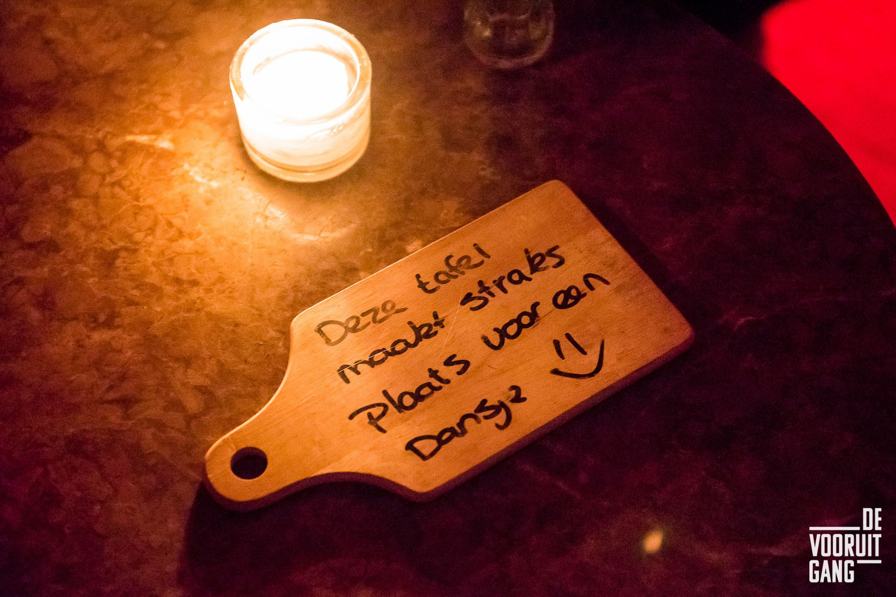

Buiten mijn studie ben ik twee dagen in de week werkzaam bij stadscafe De Vooruitgang als bar- en bedieningsmedewerker. Ik zit daarbij nog in een extra team die zich bezig houdt met nieuwe concepten bedenken om de ervaring van de gasten te verbeteren. In augustus zijn we begonnen met een brainstormsessie. Hier zijn een helehoop ideeën uitgekomen. De sessie die hierop volgde zijn we de ideeën gaan catogiriseren naar realistisch/’past bij ons’ naar onrealistisch/’past niet bij ons’.
De EGEL en de VOS
Voordat we zijn gaan brainstormen hebben we onze ‘egel’ bepaald via het ‘Egel en de Vos’ principe.
Dit interesante artikel gaat een stuk dieper op het egel en de vos principe in.
Waar we het beste in kunnen zijn:
Teamspirit, uitstraling, verfrissend!
Waar ons hartje sneller van klopt:
Familiegevoel, ambassadeurs (zijn en creëren) Concentreren waar je goed in bent, dat is je egel. Kunnen we daar het allerbeste van de wereld in zijn?
Reserveringsbordjes
Als gasten bij ons gereserveerd hebben wordt er op de gereserveerde tafel een bordje gelegd met daarop de reserveringsgegevens. Een probleem wat we hier bij hadden was dat andere gasten de bordjes niet zagen en deze plekken innamen.
Om dit te verbeteren hebben we een hiervoor een nieuw concept bedacht. We hebben bedacht om enveloppen te maken waarop de details (zoals naam en tijd etc.) geschreven worden. Deze wordt op de tafel geplaatst. In de envelop zit een kaartje met daarop een tekstje die past bij het type reservering, deze zijn al vooraf opgesteld.
Bijvoorbeeld voor een vrijgezellenfeest:
"BEFORE YOU SAY ‘I DO’, LET’S HAVE A DRINK OR TWO"
De reserveringsenvelop die op de tafel geplaatst wordt met een kaartjeshouder.
Vanaf begin januari gaan we hiermee beginnen.
Superpromoters creeëren
Het tweede idee waar we mee bezig zijn is het ontwerpen van een review kaartje. Deze wordt op vrijdag- en zaterdagavond aan vijf willekeurige gasten gegeven. Als zij deze invullen krijgen ze een bounce- back bon waarmee ze met een volgende bezoek een aanbieding krijgen (bijvoorbeeld een kop koffie gratis). Ook wordt er dan met de gasten een polaroid foto gemaakt die ze als herinnering van ons ontvangen, wij houden ook een kopie die wij (met toestemming uiteraard) op een bord ergens in zaak ophangen.
Het review kaartje wat aan gasten meegegeven wordt.
De bounceback bon die gasten na het invullen ontvangen.
De uiteindelijke jaarkalender
Om aan de rest van het personeel te communiceren wat er in 2018 gaat gebeuren heb ik een grote jaarkalender ontworpen die op A0 gedrukt gaat worden en opgehangen wordt op het kantoor.
Per maand hebben we een thema bedacht. Op deze theme’s worden trainingen gebaseerd. Bijvoorbeel: mei is de maand van ‘flairing & cairing’ oftewel cocktails! In deze maand worden er dus nieuwe coctails geïntroduceerd en een flair training gegeven.
Ook worden de startdata van de uitgewerkte concepten op deze kalender verwerkt. De eerste vier maanden zijn nu ingevuld en kalender wordt nu samen met de andere ontwerpen uitgewerkt door de grafisch vormgever van het moederbedrijf (Debuut).